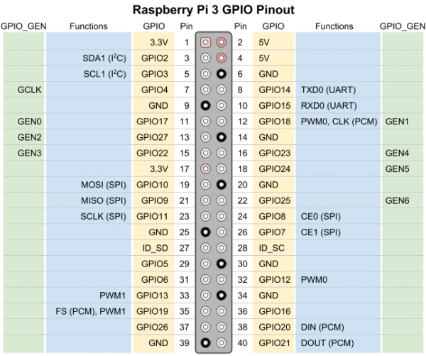

B. Accessing the headless RPI without network
Connecting the debug console
Warning
Make sure the Raspberry Pi is off (not powered) before proceeding the following steps !
First, insert the sd-card in the Raspberry Pi
The console will be connected on the I/O ports on the RPI board and on an USB input of the host computer.
The serial to USB adapter is a FTDI USB cable with 3, 4 or 6 ”Arduino like” terminations to be plugged on the RPI board, you can find some information in the data sheet of the cable :
- The one with 3 terminations : https://www.mouser.fr/datasheet/2/163/DS_TTL-232R_RPi-267577.pdf
- The one with 6 terminations : https://cdn.robotshop.com/media/s/spa/rb-spa-432/pdf/ftdi-cable-schematic-dev-09718.pdf
- The one with 4 terminations : https://www.adafruit.com/product/954?srsltid=AfmBOoploJ4nyapeY4tQLdr9ZWopzSrvJaUvqjKPwxA8N61XxzHrdqi4
Warning
Caution! The GPIO pins on the Raspberry Pi are NOT 5V tolerant. That means you must use a 3.3V USB-to-serial converter.
Look at the GPIO pinout for the Raspberry Pi 3, and find the UART pins. Plug the 3 necessary terminations of the FTDI USB cable on the board accordingly.

Now this is done, power up the board !
Set-up the FTDI USB cable connection on a serial port of the host
First, let's get the name of the serial port on the host. The /dev/ directory consists of files that represent devices that are attached to the local system.
Before plugin the FTDI USB cable,
check the system messages :
sudo dmesg
ls /dev | grep "tty"
Now, plug the FTDI cable and check again. dmesg should tell you about a new connection and the devices list should display a new device
1 - Issue
Find the name of the serial port. It should be something like /dev/tty*
Note
If you are using Windows, you will need to know the COM port number connected to your USB to serial adapter, which can be found in the Device Manager
1 - Solution
The name of serial port should be something like /dev/ttyUSB0
Check it works with :
stty -F <serial_port_name>
If the command works only with sudo, you need to be added to the dialout group, which gives full and direct access to serial ports.
First, check the groups you are member of :
groups
sudo usermod -a -G dialout $USER
if you don’t want to restart the session, remember this trick (the scope of this command is only the current shell):
su - $USER
Warning
Be careful, the su - $USER command only add you in the dialout group for the terminal where you used it. But, when you will restart your computer, all your terminals will open with your user already in dialout group, and you will not need to use su - $USER again.
now dialout should be in the group list
groups
Access the RPI from the host
Once the RPI boot has booted, we can access it from the host with
tools like minicom.
the speed should be 115200 bauds
2 - Issue
Start minicom specifying the device name and a baudrate of 115200 using the correct options
2 - Solution
minicom -b 115200 -D /dev/ttyUSB0
Note
On windows use Putty is a straight-forward solution to connect to serial ports
If you still pefer using minicom under WSL, you need to use usbipd but it needs more setup
The first time using minicom, the "Hardware control flow" must be disabled :
- type
ctrl-Athenoto access the configuration - select "Serial port setup"
- type F to disable Hardware Flow Control
- select "Save setup as dfl" so that next time you will not need to reconfigure
- finally select "Exit"
The login prompt should appear one or two minutes after powering the RPI board. Type user and passwd to log in. You can use ue41 user you have created in Lab 1.
Check your hostname is the one you set in Lab 1 :
hostname